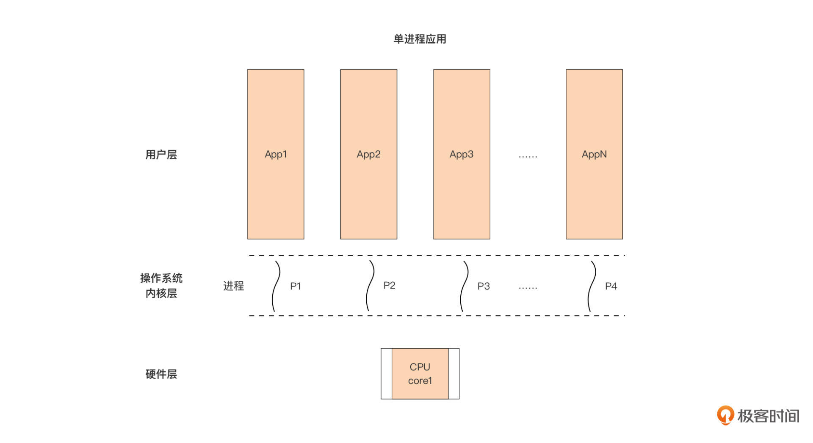
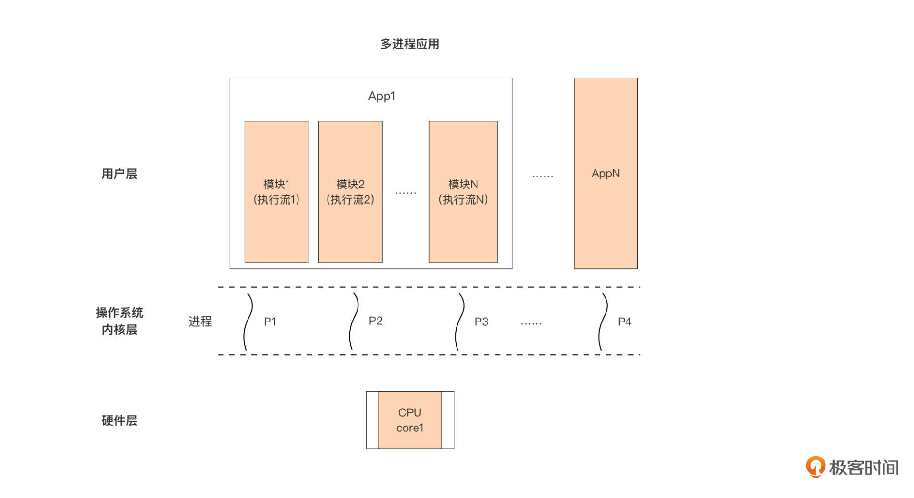
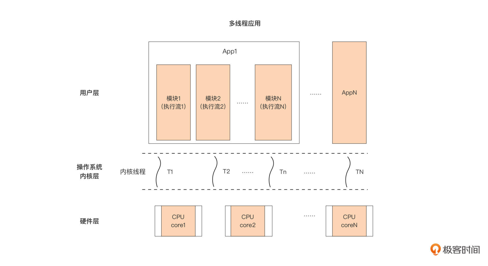
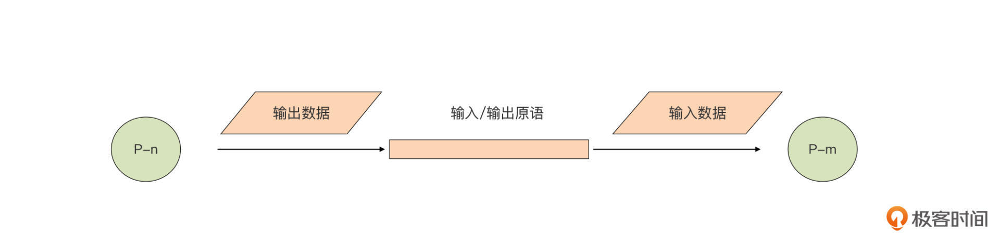

- 00 开篇词 这样入门Go，才能少走弯路.md.html
- 01 前世今生：你不得不了解的Go的历史和现状.md.html
- 02 拒绝“Hello and Bye”：Go语言的设计哲学是怎么一回事？.md.html
- 03 配好环境：选择一种最适合你的Go安装方法.md.html
- 04 初窥门径：一个Go程序的结构是怎样的？.md.html
- 05 标准先行：Go项目的布局标准是什么？.md.html
- 06 构建模式：Go是怎么解决包依赖管理问题的？.md.html
- 07 构建模式：Go Module的6类常规操作.md.html
- 08 入口函数与包初始化：搞清Go程序的执行次序.md.html
- 09 即学即练：构建一个Web服务就是这么简单.md.html
- 10 变量声明：静态语言有别于动态语言的重要特征.md.html
- 11 代码块与作用域：如何保证变量不会被遮蔽？.md.html
- 12 基本数据类型：Go原生支持的数值类型有哪些？.md.html
- 13 基本数据类型：为什么Go要原生支持字符串类型？.md.html
- 14 常量：Go在“常量”设计上的创新有哪些？.md.html
- 15 同构复合类型：从定长数组到变长切片.md.html
- 16 复合数据类型：原生map类型的实现机制是怎样的？.md.html
- 17 复合数据类型：用结构体建立对真实世界的抽象.md.html
- 18 控制结构：if的“快乐路径”原则.md.html
- 19 控制结构：Go的for循环，仅此一种.md.html
- 20 控制结构：Go中的switch语句有哪些变化？.md.html
- 21 函数：请叫我“一等公民”.md.html
- 22 函数：怎么结合多返回值进行错误处理？.md.html
- 23 函数：怎么让函数更简洁健壮？.md.html
- 24 方法：理解“方法”的本质.md.html
- 25 方法：方法集合与如何选择receiver类型？.md.html
- 26 方法：如何用类型嵌入模拟实现“继承”？.md.html
- 27 即学即练：跟踪函数调用链，理解代码更直观.md.html
- 28 接口：接口即契约.md.html
- 29 接口：为什么nil接口不等于nil？.md.html
- 30 接口：Go中最强大的魔法.md.html
- 31 并发：Go的并发方案实现方案是怎样的？.md.html
- 32 并发：聊聊Goroutine调度器的原理.md.html
- 33 并发：小channel中蕴含大智慧.md.html
- 34 并发：如何使用共享变量？.md.html
- 35 即学即练：如何实现一个轻量级线程池？.md.html
- 36 打稳根基：怎么实现一个TCP服务器？（上）.md.html
- 37 代码操练：怎么实现一个TCP服务器？（中）.md.html
- 38 成果优化：怎么实现一个TCP服务器？（下）.md.html
- 39 驯服泛型：了解类型参数.md.html
- 40 驯服泛型：定义泛型约束.md.html
- 41 驯服泛型：明确使用时机.md.html
- 元旦快乐 这是一份暂时停更的声明.md.html
- 加餐 作为Go Module的作者，你应该知道的几件事.md.html
- 加餐 如何拉取私有的Go Module？.md.html
- 加餐 我“私藏”的那些优质且权威的Go语言学习资料.md.html
- 加餐 聊聊Go 1.17版本的那些新特性.md.html
- 加餐 聊聊Go语言的指针.md.html
- 加餐 聊聊最近大热的Go泛型.md.html
- 大咖助阵 叶剑峰：Go语言中常用的那些代码优化点.md.html
- 大咖助阵 大明：Go泛型，泛了，但没有完全泛.md.html
- 大咖助阵 孔令飞：从小白到“老鸟”，我的Go语言进阶之路.md.html
- 大咖助阵 徐祥曦：从销售到分布式存储工程师，我与 Go 的故事.md.html
- 大咖助阵 曹春晖：聊聊 Go 语言的 GC 实现.md.html
- 大咖助阵 海纳：聊聊语言中的类型系统与泛型.md.html
- 期中测试 一起检验下你的学习成果吧.md.html
- 用户故事 罗杰：我的Go语言学习之路.md.html
- 结束语 和你一起迎接Go的黄金十年.md.html
- 结课测试 快来检验下你的学习成果吧！.md.html
- 捐赠
31 并发：Go的并发方案实现方案是怎样的？
你好，我是Tony Bai。
从这一讲开始，我们将会学习这门课的最后一个语法知识：Go并发。在02讲中我们提到过：Go的设计者敏锐地把握了CPU向多核方向发展的这一趋势，在决定去创建Go语言的时候，他们果断将面向多核、原生支持并发作为了Go语言的设计目标之一，并将面向并发作为Go的设计哲学。当Go语言首次对外发布时，对并发的原生支持成为了Go最令开发者着迷的语法特性之一。
那么，怎么去学习Go并发呢？我的方法是将“Go并发”这个词拆开来看，它包含两方面内容，一个是并发的概念，另一个是Go针对并发设计给出的自身的实现方案，也就是goroutine、channel、select这些Go并发的语法特性。
今天这节课，我们就先来了解什么是并发，以及Go并发方案中最重要的概念，也就是goroutine，围绕它基本用法和注意事项，让你对Go并发有一个基本的了解，后面我们再层层深入。
什么是并发？
课程一开始，我们就经常提到并发（concurrency）这个词。说了这么长时间的并发，那究竟什么是并发呢？它又与并行（parallelism）有什么区别呢？要想搞清楚这些问题，我们需要简单回顾一下操作系统的基本调度单元的变迁，以及计算机处理器的演化对应用设计的影响。
很久以前，面向大众消费者的主流处理器（CPU）都是单核的，操作系统的基本调度与执行单元是进程（process）。这个时候，用户层的应用有两种设计方式，一种是单进程应用，也就是每次启动一个应用，操作系统都只启动一个进程来运行这个应用。
单进程应用的情况下，用户层应用、操作系统进程以及处理器之间的关系是这样的：

我们看到，这个设计下，每个单进程应用对应一个操作系统进程，操作系统内的多个进程按时间片大小，被轮流调度到仅有的一颗单核处理器上执行。换句话说，这颗单核处理器在某个时刻只能执行一个进程对应的程序代码，两个进程不存在并行执行的可能。
这里说的并行（parallelism），指的就是在同一时刻，有两个或两个以上的任务（这里指进程）的代码在处理器上执行。从这个概念我们也可以知道，多个处理器或多核处理器是并行执行的必要条件。
总的来说，单进程应用的设计比较简单，它的内部仅有一条代码执行流，代码从头执行到尾，不存在竞态，无需考虑同步问题。
用户层的另外一种设计方式，就是多进程应用，也就是应用通过fork等系统调用创建多个子进程，共同实现应用的功能。多进程应用的情况下，用户层应用、操作系统进程以及处理器之间的关系是这样的：

以图中的App1为例，这个应用设计者将应用内部划分为多个模块，每个模块用一个进程承载执行，每个模块都是一个单独的执行流，这样，App1内部就有了多个独立的代码执行流。
但限于当前仅有一颗单核处理器，这些进程（执行流）依旧无法并行执行，无论是App1内部的某个模块对应的进程，还是其他App对应的进程，都得逐个按时间片被操作系统调度到处理器上执行。
粗略看起来，多进程应用与单进程应用相比并没有什么质的提升。那我们为什么还要将应用设计为多进程呢？
这更多是从应用的结构角度去考虑的，多进程应用由于将功能职责做了划分，并指定专门的模块来负责，所以从结构上来看，要比单进程更为清晰简洁，可读性与可维护性也更好。这种将程序分成多个可独立执行的部分的结构化程序的设计方法，就是并发设计。采用了并发设计的应用也可以看成是一组独立执行的模块的组合。
不过，进程并不适合用于承载采用了并发设计的应用的模块执行流。因为进程是操作系统中资源拥有的基本单位，它不仅包含应用的代码和数据，还有系统级的资源，比如文件描述符、内存地址空间等等。进程的“包袱”太重，这导致它的创建、切换与撤销的代价都很大。
于是线程便走入了人们的视野，线程就是运行于进程上下文中的更轻量级的执行流。同时随着处理器技术的发展，多核处理器硬件成为了主流，这让真正的并行成为了可能，于是主流的应用设计模型变成了这样：

我们看到，基于线程的应用通常采用单进程多线程的模型，一个应用对应一个进程，应用通过并发设计将自己划分为多个模块，每个模块由一个线程独立承载执行。多个线程共享这个进程所拥有的资源，但线程作为执行单元可被独立调度到处理器上运行。
线程的创建、切换与撤销的代价相对于进程是要小得多。当这个应用的多个线程同时被调度到不同的处理器核上执行时，我们就说这个应用是并行的。
讲到这里，我们可以对并发与并行两个概念做一些区分了。就像Go语言之父Rob Pike曾说过那样：并发不是并行，并发关乎结构，并行关乎执行。
结合上面的例子，我们看到，并发是在应用设计与实现阶段要考虑的问题。并发考虑的是如何将应用划分为多个互相配合的、可独立执行的模块的问题。采用并发设计的程序并不一定是并行执行的。
在不满足并行必要条件的情况下（也就是仅有一个单核CPU的情况下），即便是采用并发设计的程序，依旧不可以并行执行。而在满足并行必要条件的情况下，采用并发设计的程序是可以并行执行的。而那些没有采用并发设计的应用程序，除非是启动多个程序实例，否则是无法并行执行的。
在多核处理器成为主流的时代，即使采用并发设计的应用程序以单实例的方式运行，其中的每个内部模块也都是运行于一个单独的线程中的，多核资源也可以得到充分利用。而且，并发让并行变得更加容易，采用并发设计的应用可以将负载自然扩展到各个CPU核上，从而提升处理器的利用效率。
在传统编程语言（如C、C++等）中，基于多线程模型的应用设计就是一种典型的并发程序设计。但传统编程语言并非面向并发而生，没有对并发设计提供过多的帮助。并且，这些语言多以操作系统线程作为承载分解后的代码片段（模块）的执行单元，由操作系统执行调度。这种传统支持并发的方式有很多不足：
首先就是复杂。
创建容易退出难。如果你做过C/C++编程，那你肯定知道，如果我们要利用libpthread库中提供的API创建一个线程，虽然要传入的参数个数不少，但好歹还是可以接受的。但一旦涉及线程的退出，就要考虑新创建的线程是否要与主线程分离（detach），还是需要主线程等待子线程终止（join）并获取其终止状态？又或者是否需要在新线程中设置取消点（cancel point）来保证被主线程取消（cancel）的时候能顺利退出。
而且，并发执行单元间的通信困难且易错。多个线程之间的通信虽然有多种机制可选，但用起来也是相当复杂。并且一旦涉及共享内存，就会用到各种锁互斥机制，死锁便成为家常便饭。另外，线程栈大小也需要设定，开发人员需要选择使用默认的，还是自定义设置。
第二就是难于规模化（scale）。
线程的使用代价虽然已经比进程小了很多，但我们依然不能大量创建线程，因为除了每个线程占用的资源不小之外，操作系统调度切换线程的代价也不小。
对于很多网络服务程序来说，由于不能大量创建线程，只能选择在少量线程里做网络多路复用的方案，也就是使用epoll/kqueue/IoCompletionPort这套机制，即便有像libevent和libev这样的第三方库帮忙，写起这样的程序也是很不容易的，存在大量钩子回调，给开发人员带来不小的心智负担。
那么以“原生支持并发”著称的Go语言在并发方面的实现方案又是什么呢？相对于基于线程的并发设计模型又有哪些改善呢？接下来我们就一起来看一下。
Go的并发方案：goroutine
Go并没有使用操作系统线程作为承载分解后的代码片段（模块）的基本执行单元，而是实现了goroutine这一由Go运行时（runtime）负责调度的、轻量的用户级线程，为并发程序设计提供原生支持。
我们先来看看这一方案有啥优势。相比传统操作系统线程来说，goroutine的优势主要是：
- 资源占用小，每个goroutine的初始栈大小仅为2k；
- 由Go运行时而不是操作系统调度，goroutine上下文切换在用户层完成，开销更小；
- 在语言层面而不是通过标准库提供。goroutine由
go关键字创建，一退出就会被回收或销毁，开发体验更佳； - 语言内置channel作为goroutine间通信原语，为并发设计提供了强大支撑。
我们看到，和传统编程语言不同的是，Go语言是面向并发而生的，所以，在程序的结构设计阶段，Go的惯例是优先考虑并发设计。这样做的目的更多是考虑随着外界环境的变化，通过并发设计的Go应用可以更好地、更自然地适应规模化（scale）。
比如，当应用被分配到更多计算资源，或者计算处理硬件增配后，Go应用不需要再进行结构调整，就可以充分利用新增的计算资源。而且，经过并发设计后的Go应用也会更加契合Gopher们的开发分工协作。
接下来，我们来看看在Go中究竟如何使用goroutine。
goroutine的基本用法
并发是一种能力，它让你的程序可以由若干个代码片段组合而成，并且每个片段都是独立运行的。goroutine恰恰就是Go原生支持并发的一个具体实现。无论是Go自身运行时代码还是用户层Go代码，都无一例外地运行在goroutine中。
首先我们来创建一个goroutine。
Go语言通过go关键字+函数/方法的方式创建一个goroutine。创建后，新goroutine将拥有独立的代码执行流，并与创建它的goroutine一起被Go运行时调度。
这里我给出了一些创建goroutine的代码示例：
go fmt.Println("I am a goroutine")
var c = make(chan int)
go func(a, b int) {
c <- a + b
}(3,4)
// $GOROOT/src/net/http/server.go
c := srv.newConn(rw)
go c.serve(connCtx)
我们看到，通过go关键字，我们可以基于已有的具名函数/方法创建goroutine，也可以基于匿名函数/闭包创建goroutine。
在前面的讲解中，我们曾说过，创建goroutine后，go关键字不会返回goroutine id之类的唯一标识goroutine的id，你也不要尝试去得到这样的id并依赖它。另外，和线程一样，一个应用内部启动的所有goroutine共享进程空间的资源，如果多个goroutine访问同一块内存数据，将会存在竞争，我们需要进行goroutine间的同步。
了解了怎么创建，那我们怎么退出goroutine呢？
goroutine的使用代价很低，Go官方也推荐你多多使用goroutine。而且，多数情况下，我们不需要考虑对goroutine的退出进行控制：goroutine的执行函数的返回，就意味着goroutine退出。
如果main goroutine退出了，那么也意味着整个应用程序的退出。此外，你还要注意的是，goroutine执行的函数或方法即便有返回值，Go也会忽略这些返回值。所以，如果你要获取goroutine执行后的返回值，你需要另行考虑其他方法，比如通过goroutine间的通信来实现。
接下来我们就来说说goroutine间的通信方式。
goroutine间的通信
传统的编程语言（比如：C++、Java、Python等）并非面向并发而生的，所以他们面对并发的逻辑多是基于操作系统的线程。并发的执行单元（线程）之间的通信，利用的也是操作系统提供的线程或进程间通信的原语，比如：共享内存、信号（signal）、管道（pipe）、消息队列、套接字（socket）等。
在这些通信原语中，使用最多、最广泛的（也是最高效的）是结合了线程同步原语（比如：锁以及更为低级的原子操作）的共享内存方式，因此，我们可以说传统语言的并发模型是基于对内存的共享的。
不过，这种传统的基于共享内存的并发模型很难用，且易错，尤其是在大型或复杂程序中，开发人员在设计并发程序时，需要根据线程模型对程序进行建模，同时规划线程之间的通信方式。如果选择的是高效的基于共享内存的机制，那么他们还要花费大量心思设计线程间的同步机制，并且在设计同步机制的时候，还要考虑多线程间复杂的内存管理，以及如何防止死锁等情况。
这种情况下，开发人员承受着巨大的心智负担，并且基于这类传统并发模型的程序难于编写、阅读、理解和维护。一旦程序发生问题，查找Bug的过程更是漫长和艰辛。
但Go语言就不一样了！Go语言从设计伊始，就将解决上面这个传统并发模型的问题作为Go的一个目标，并在新并发模型设计中借鉴了著名计算机科学家Tony Hoare提出的CSP（Communicating Sequential Processes，通信顺序进程）并发模型。
Tony Hoare的CSP模型旨在简化并发程序的编写，让并发程序的编写与编写顺序程序一样简单。Tony Hoare认为输入输出应该是基本的编程原语，数据处理逻辑（也就是CSP中的P）只需调用输入原语获取数据，顺序地处理数据，并将结果数据通过输出原语输出就可以了。
因此，在Tony Hoare眼中，一个符合CSP模型的并发程序应该是一组通过输入输出原语连接起来的P的集合。从这个角度来看，CSP理论不仅是一个并发参考模型，也是一种并发程序的程序组织方法。它的组合思想与Go的设计哲学不谋而合。
Tony Hoare的CSP理论中的P，也就是“Process（进程）”，是一个抽象概念，它代表任何顺序处理逻辑的封装，它获取输入数据（或从其他P的输出获取），并生产出可以被其他P消费的输出数据。这里我们可以简单看下CSP通信模型的示意图：

注意了，这里的P并不一定与操作系统的进程或线程划等号。在Go中，与“Process”对应的是goroutine。为了实现CSP并发模型中的输入和输出原语，Go还引入了goroutine（P）之间的通信原语channel。goroutine可以从channel获取输入数据，再将处理后得到的结果数据通过channel输出。通过channel将goroutine（P）组合连接在一起，让设计和编写大型并发系统变得更加简单和清晰，我们再也不用为那些传统共享内存并发模型中的问题而伤脑筋了。
比如我们上面提到的获取goroutine的退出状态，就可以使用channel原语实现：
func spawn(f func() error) <-chan error {
c := make(chan error)
go func() {
c <- f()
}()
return c
}
func main() {
c := spawn(func() error {
time.Sleep(2 * time.Second)
return errors.New("timeout")
})
fmt.Println(<-c)
}
这个示例在main goroutine与子goroutine之间建立了一个元素类型为error的channel，子goroutine退出时，会将它执行的函数的错误返回值写入这个channel，main goroutine可以通过读取channel的值来获取子goroutine的退出状态。
虽然CSP模型已经成为Go语言支持的主流并发模型，但Go也支持传统的、基于共享内存的并发模型，并提供了基本的低级别同步原语（主要是sync包中的互斥锁、条件变量、读写锁、原子操作等）。
那么我们在实践中应该选择哪个模型的并发原语呢？是使用channel，还是在低级同步原语保护下的共享内存呢？
毫无疑问，从程序的整体结构来看，Go始终推荐以CSP并发模型风格构建并发程序，尤其是在复杂的业务层面，这能提升程序的逻辑清晰度，大大降低并发设计的复杂性，并让程序更具可读性和可维护性。
不过，对于局部情况，比如涉及性能敏感的区域或需要保护的结构体数据时，我们可以使用更为高效的低级同步原语（如mutex），保证goroutine对数据的同步访问。
小结
好了，今天的课讲到这里就结束了，现在我们一起来回顾一下吧。
这一讲中，我们开始了对Go并发的学习，了解了并发的含义，以及并发与并行两个概念的区别。你一定要记住：并发不是并行。并发是应用结构设计相关的概念，而并行只是程序执行期的概念，并行的必要条件是具有多个处理器或多核处理器，否则无论是否是并发的设计，程序执行时都有且仅有一个任务可以被调度到处理器上执行。
传统的编程语言（比如：C、C++）的并发程序设计方案是基于操作系统的线程调度模型的，这种模型与操作系统的调度强耦合，并且对于开发人员来说十分复杂，开发体验较差并且易错。
而Go给出的并发方案是基于轻量级线程goroutine的。goroutine占用的资源非常小，创建、切换以及销毁的开销很小。并且Go在语法层面原生支持基于goroutine的并发，通过一个go关键字便可以轻松创建goroutine，goroutine占用的资源非常小，创建、切换以及销毁的开销很小。这给开发者带来极佳的开发体验。
思考题
goroutine作为Go应用的基本执行单元，它的创建、退出以及goroutine间的通信都有很多常见的模式可循。你可以分享一下日常开发中你见过的实用的goroutine使用模式吗？
欢迎把这节课分享给更多对Go并发感兴趣的朋友。我是Tony Bai，下节课见。
© 2019 - 2023 Liangliang Lee. Powered by gin and hexo-theme-book.